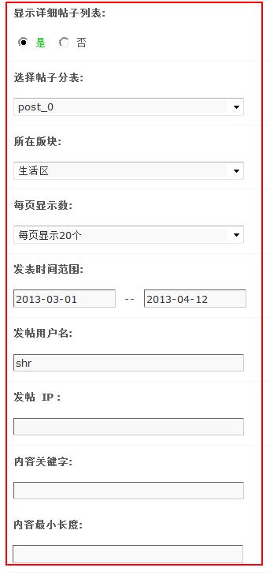
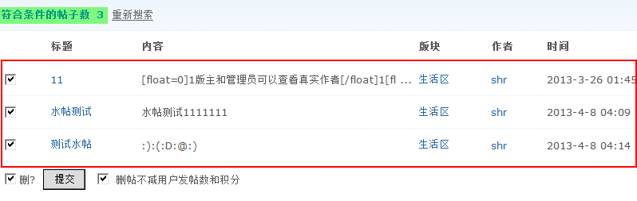
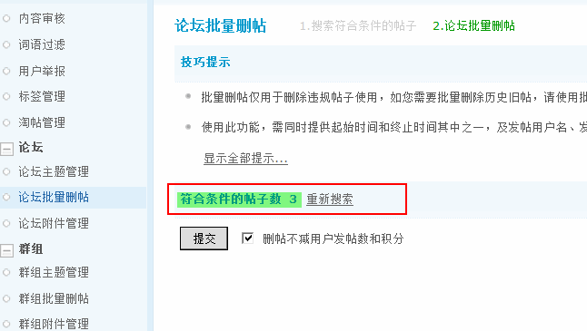

论坛批量删帖
论坛批量删帖仅用于删除论坛中违规帖子使用，系统将根据所输入的帖子的信息（包括：帖子所在分表、所在版块、每页显示数、发表时间范围、发帖用户名、发帖IP、内容关键字、内容最小长度）来获取帖子，然后进行批量删除。如您需要批量删除历史旧帖，建议使用论坛批量主题管理功能。
一、筛选批量删除帖子条件
操作路径：【后台】=>【内容】=>【论坛批量删帖】
1、显示详细帖子列表：是否显示搜索到的帖子的详细信息。选择“是”效果如下：
选择“否”的效果如下：
2、帖子所在分表：如果您的站点开启了分表，可以在这里选择分表。如果没有开启，默认就可以了。
3、所在版块：按照主题所在的版块进行搜索。
4、每页显示数：每页显示多少帖子，可以选择20个、50个或者100个。
5、发表时间范围：格式 yyyy-mm-dd，如2012-2-2–2012-3-2。
6、发帖用户名：按照发帖的用户名进行搜索，若有多个，用‘,’分割。
7、发帖IP：按照发帖者的IP地址进行搜索，可使用通配符’*’对某网段进行筛选，慎用！
8、内容关键字：按照内容中包含的关键字进行搜索。多个关键字用’,’分割，关键词可以用限定符{*}，表示出现的次数。
9、内容最小长度：按照帖子内容的最小长度进行搜索，开启后会加重服务器负担。
点击‘提交’后即可进行搜索。
二、删除筛选后的帖子
1、若选择了‘显示详细帖子列表’，则可以看到所选择的帖子的详细信息，此时可以勾选相应的复选框决定是否删除。
2、删贴不减用户发帖数和积分：若勾选则对用户发帖数和积分数没有影响，否则会减去用户相应的发帖数和积分。
3、点击‘提交’即可删除筛选的所有帖子。
三、注意事项
1、批量删帖仅用于删除违规帖子使用，如您需要批量删除历史旧帖，请使用批量主题管理功能。
2、使用此功能，需同时提供起始时间和终止时间其中之一，及发帖用户名、发帖 IP、内容关键字其中之一，至少共二项必要的条件，否则将无法进行操作。
3、如果符合删除条件的帖子为主题第一帖，或该主题无回复，将删除整个主题。
4、如果您不是论坛管理员，您只能删除从某一时间到现在的范围内的帖子。
5、超级版主的删帖的时间范围为二星期(14 天)；版主的时间范围为一星期(7 天)且只能删除所管辖论坛内的帖子。
6、关键字可以使用限定符 {x} 以限定相邻两字符间可忽略的文字，x 是忽略字符的个数，如 “a{1}s{2}s”(不含引号) 可以搜索到 “ass” 也可搜索到 “axsxs” 和 “axsxxs” 等等。